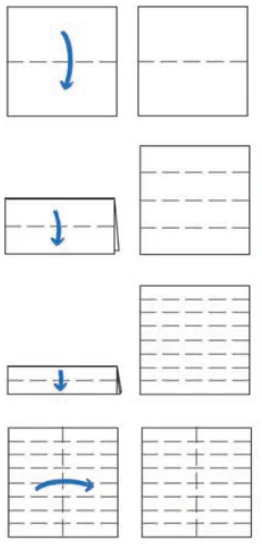
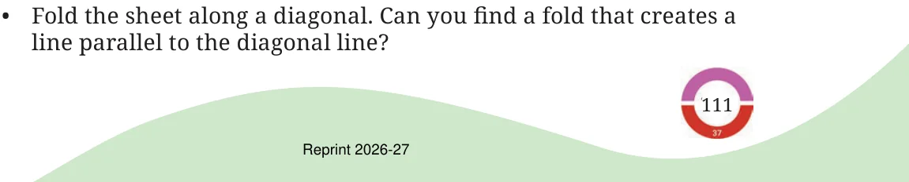
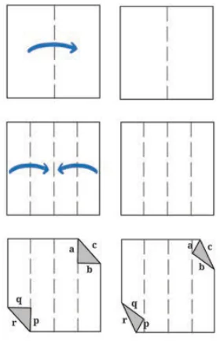

Activity 2
Take a plain square sheet of paper (use a newspaper for this activity).
- •How would you describe the opposite edges of the sheet? They
are _________________________ to each other.
- •How would you describe the adjacent edges of the sheet? The
adjacent edges are _________________________ to each other. They meet at a point. They form right angles.
- •Fold the sheet horizontally in half. A new line is formed
(see Fig. 5.7).
- •How many parallel lines do you see now? How does the new line
segment relate to the vertical sides?

- •Make one more horizontal fold in the folded sheet. How many
parallel lines do you see now?
- •What will happen if you do it once more? How many parallel
lines will you get? Is there a pattern? Check if the pattern extends further, if you make another horizontal fold.
- •Make a vertical fold in the square sheet. This new vertical line is
___________ to the previous horizontal lines.

Here is another activity for you to try.
- •Take a square sheet of paper, fold it in the middle and unfold it.
- •Fold the edges towards the centre line and unfold them.
- •Fold the top right and bottom left corners onto the creased line to
create triangles. Refer to Fig. 5.8.
- •The triangles should not cross the crease lines.
- •Are a, b and c parallel to p, q and r respectively? Why or why not?
